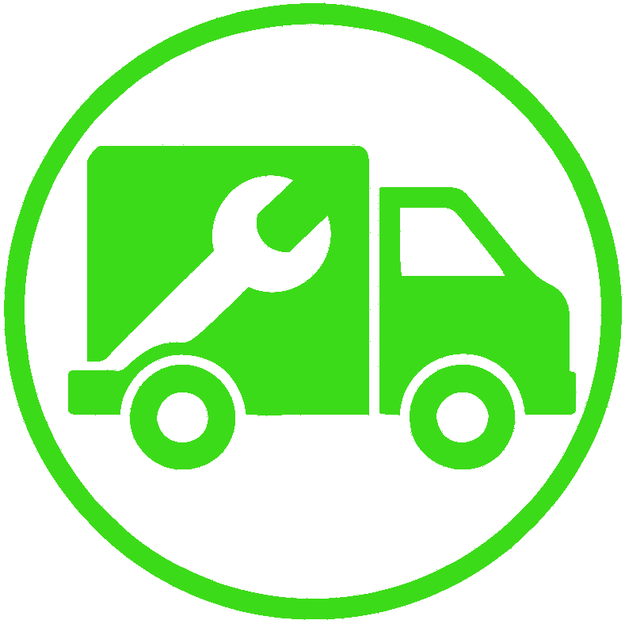
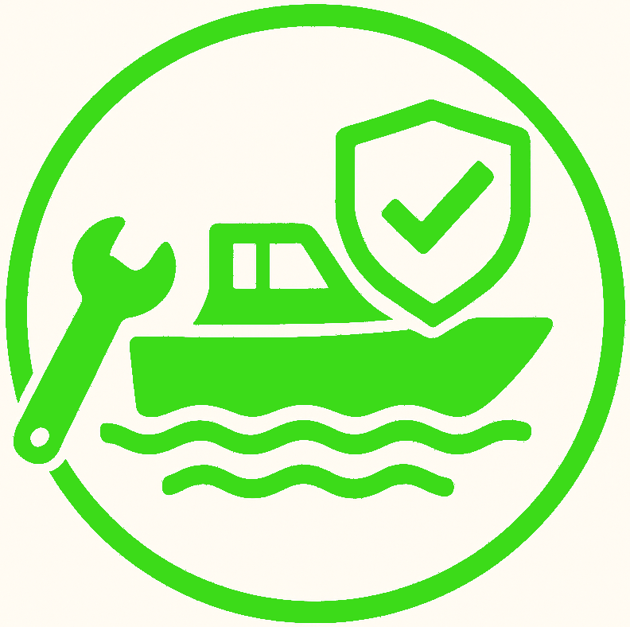
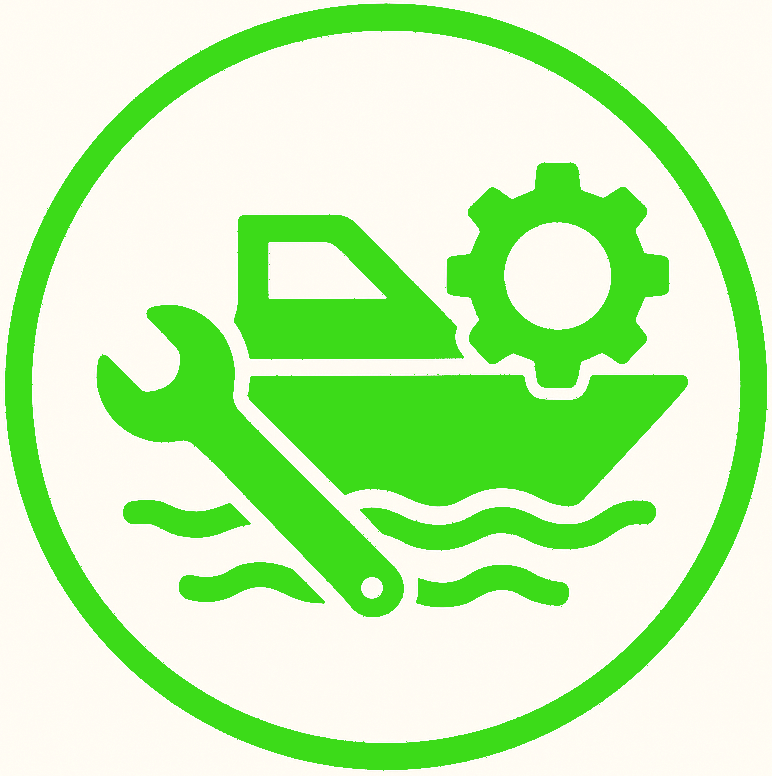
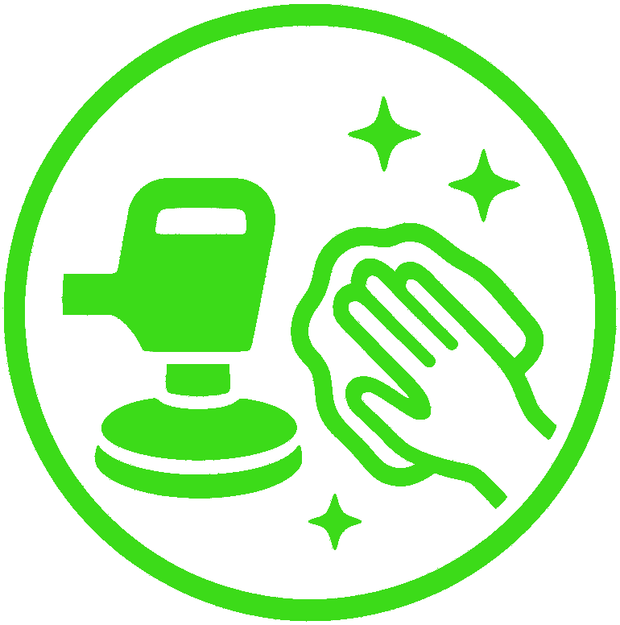

Select a Service to find out more!

Engine Repair

Winterize / Dewinterize

Seawater Impeller Replacement

Part Replacement
- 
Mobile Service
- 
Insurance Repair
- 
Marine System Maintenance
- 
Compound, Buffing, Polishing
Select a service above to see more information! How can our doctors help?
Engine Repair
Diagnostic evaluation and repair of marine engines to address performance issues, mechanical failures, and operational concerns. Services are performed with attention to manufacturer specifications, system integrity, and long-term reliability.
Open a Service Agreement with us to get started!
Winterize / Dewinterize
Seasonal preparation and recommissioning services designed to protect marine systems during storage and ensure readiness for operation. Winterization helps prevent freeze damage, while de-winterization restores systems for safe and reliable use.
Open a Service Agreement with us to get started!
Seawater Impeller Replacement
Routine inspection and replacement of seawater impellers to ensure proper engine cooling and prevent overheating. Service includes assessment of wear, housing condition, and system operation to maintain reliable water flow and engine performance.
Open a Service Agreement with us to get started!
Part Replacement
Identification, sourcing, and installation of marine-grade replacement parts using manufacturer-approved or equivalent components. Services focus on restoring functionality while maintaining safety, compatibility, and long-term reliability.
Open a Service Agreement with us to get started!
Mobile Service
On-site marine repair and maintenance performed at your dock, marina, or storage location. Mobile service minimizes downtime and eliminates the need for trailering or transporting your vessel whenever possible.
Open a Service Agreement with us to get started!
Insurance Repair
Professional assessment and repair of insured damage, coordinated to meet insurance provider requirements. Documentation, estimates, and repair execution are handled with attention to accuracy, quality, and compliance.
Open a Service Agreement with us to get started!
Marine System Maintenance
Inspection, servicing, and preventative maintenance of critical onboard systems including electrical, cooling, fuel, and auxiliary components. Regular maintenance helps reduce unexpected failures and extend system lifespan.
Open a Service Agreement with us to get started!
Compund, Buffing, Polishing
Restorative surface treatment to remove oxidation, improve finish clarity, and enhance overall appearance. Services help protect gelcoat and painted surfaces while improving durability and visual appeal.
Open a Service Agreement with us to get started!
Lake Veterans
We have been serving the Lake of The Ozarks for 30 years! That means you get the best service possible from experienced mechanics, who prioritize getting you and your boat out on the water on your schedule. Keep an eye out for our bright green trucks as we travel around the lake!
Premiere Care
The Boat Docs remains a major competitor at the lake for one good reason, quality. How many times have you hired a mechanic, and when you returned found greasy hand prints, keys in the wrong place, and generally amateur mistakes? Not so, with our doctors. Let us put our 30 years of experience to work for you, and never suffer from a sloppy mistake again!
Competitive Excellence
After 30 years, we remain as one of the few boat repair businesses not tied into a marina. This allows for increased mobility and removes the need for predatory marina fees to pay for overhead. This also means there’s no need to drive your boat to a marina, we will come to you!
© 2025 The Boat Docs
PO Box 3652 Camdenton, MO 65020
1-573-480-1992
- kevin@theboatdocs.com